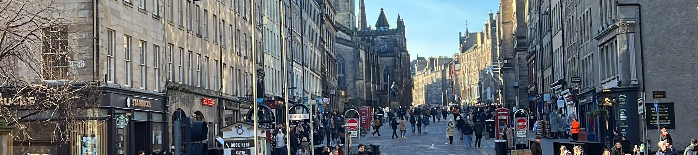

puedes apoyarme con un café.
Gracias de todo corazón
Qué ver en Edinburgh en 2 días
Un itinerario real escrito por un guía local — con las rutas que uso en mis tours, los restaurantes que recomiendaría a mi familia y los trucos que no están en ninguna app.

Llegar a Edinburgh es apabullante. La ciudad está llena de callejones y escaleras que parecen no tener fin, y Google Maps no siempre es tu amigo cuando intentas trazar rutas lógicas. Mi consejo antes de empezar: familiarízate con tres curvas clave que te ahorrarán tiempo y piernas — Cockburn Street, The Mound y Victoria Street. Domínalas y la ciudad dejará de ser un laberinto.
Este itinerario de 2 días está pensado para que veas lo esencial sin agotarte, con paradas de comida reales, cafeterías donde va la gente local y algún que otro secreto que no encontrarás en ninguna guía de viaje.


📍 Parada 1 · Mañana
Castillo de Edinburgh
No es solo un castillo — es una ciudad fortificada con más de 1.400 años de historia, varios museos, el edificio más antiguo de Edinburgh y hasta un cementerio de perros. Tienes dos opciones: entrar y perderte adentro (al menos 2–3 horas), o recorrerlo desde fuera y aprovechar para explorar Grassmarket, Greyfriars y el Museo Nacional.

🍽️ Parada 2 · Almuerzo
Victoria Street y OINK
Si no quieres perder mucho tiempo buscando dónde comer, Victoria Street tiene la respuesta: OINK, un pequeño local donde sirven sándwiches de pulled pork que son, sin exagerar, de los mejores que he probado en mi vida. Come caminando — la calle es preciosa y el sándwich lo merece.

🍺 Parada 3 · Tarde
Grassmarket y los mejores pubs
Baja desde Victoria Street y llegarás a Grassmarket, la plaza histórica rodeada de pubs con vistas al castillo. Es uno de mis lugares favoritos de la ciudad.
- 🍺White Hart Inn — el pub más antiguo de Edinburgh
- 🎸Beehive Inn — música en vivo frecuente
- 🎻Fiddler's Arms — ambiente muy local

⛪ Parada 4 · Tarde
Greyfriars Kirkyard
La iglesia y el cementerio de Greyfriars son hermosos y cargados de historia — aquí está la estatua del famoso Greyfriars Bobby, el perro que guardó la tumba de su amo durante 14 años. Sácale foto (¡tengo su canción en mi playlist de Spotify!).
Después, merece la pena subir al Canopy, el café de la Universidad de Edinburgh justo al lado. Diles que te manda Samuel el mexicano 😄 — es un espacio precioso y el café es excelente.

🌳 Parada 5 · Tarde-noche
The Meadows y Bruntsfield
Una caminata tranquila por The Meadows es el antídoto perfecto tras horas de turismo intenso. Pero no te quedes en la parte baja — sube hasta el parque de Bruntsfield, cerca del restaurante y hotel Black Ivy. Desde ahí hay una vista preciosa de la ciudad que casi nadie conoce porque no está en ningún mapa turístico.

🌅 Parada 6 · Noche
Calton Hill al atardecer
Si aún tienes energía — y te lo recomiendo con toda el alma — sube a Calton Hill antes de que anochezca. Al atardecer y de noche, si no está muy nublado (que en Escocia nunca se sabe), el paisaje es bellísimo.
¿Y si aún no estás cansado? Tres opciones para seguir en la noche:
- 🍹City Cafe — bar tranquilo junto a Tron Kirk
- 🎶Ensign Ewart — música folk en vivo
- 👻Banshee's Labyrinth — si te gustan los fantasmas


⛰️ Parada 7 · Mañana
Arthur's Seat y Palacio de Holyrood
Empieza el día en Holyrood Park. El Palacio de Holyrood vale la pena — incluso si no entras, pasear por sus terrenos es gratuito y muy bonito.
Luego sube al Arthur's Seat: un volcán extinto de 251 metros. No es difícil, pero sí es trail de verdad — lleva zapatillas de montaña, no chanclas. Tardarás sobre una hora en subir. Y en la cima, toca el cairn (montón de piedras) que marca la cumbre: según la leyenda escocesa, trae un año de suerte en el amor 💛

🏛️ Parada 8 · Mediodía
Royal Mile: el Museo de Edinburgh y OINK (ronda 2)
Sube por la Royal Mile hacia el castillo. A la izquierda, cerca del Museo de Edinburgh, encontrarás otro local de OINK — si no pudiste probarlo el día 1, este es tu momento. Y el museo merece una parada: es gratuito y tiene algunos tesoros genuinamente interesantes sobre la historia de la ciudad.
Al llegar a Tron Kirk, toma North Bridge para cruzar el valle y adentrarte en el New Town.

🏛️ Parada 9 · Tarde
New Town: George Street y St Andrew Square
Llegarás a la estatua de Wellington y, si tomas a la derecha, encontrarás un buen centro comercial con opciones de comida. Pero primero: camina por George Street y admira los mejores edificios neoclásicos de Edinburgh — The Dome, Charlotte Square y la imponente arquitectura del siglo XVIII.
En St Andrew Square encontrarás la estatua del hombre que realmente cambió el mundo (no, no es Henry Dundas, no, no es el osito Paddington 🐻).

🏘️ Secreto local · Tarde
Dean Village — el secreto mejor guardado
Desde el final de George Street, toma Queensferry Road hacia la derecha. Llegarás a un puente espectacular. Y aquí va el truco: en lugar de cruzarlo, busca Bells Brae — una callejuela muy inclinada que baja a la izquierda.
Al fondo encontrarás Dean Village: una aldea victoriana prácticamente escondida bajo el nivel de la ciudad, junto al río Water of Leith. Muy pocos turistas llegan hasta aquí. Si te pierdes, el marcador está en mi guía bajo el nombre "Dean Village".
Para terminar el día 2 🥃
Regresa a Princes Street y elige cómo cerrar Edinburgh:
- 🥩Kyloe Restaurant — elegante, conocido por su carne escocesa
- 🌮Tacos mexicanos — porque a veces uno necesita lo de casa
- 🍜Umi o Hope — ramen excelente en ambos locales
- 🎺Gillie Dhu — si tienes suerte, habrá un Cèilidh (baile escocés tradicional)

¿Quieres que lo mejoremos?
Este itinerario es una base sólida. Pero si quieres ahorrar tiempo, evitar los errores más comunes y descubrir lugares que no aparecen en ninguna app, puedo ayudarte personalmente. Llevo 4 años viviendo en Edinburgh — este es mi oficio y me encanta hacerlo bien.
☕ Si esta guía te fue útil y quieres invitarme un café, puedes hacerlo aquí. Cada apoyo me ayuda a seguir creando contenido como este — gracias de verdad.